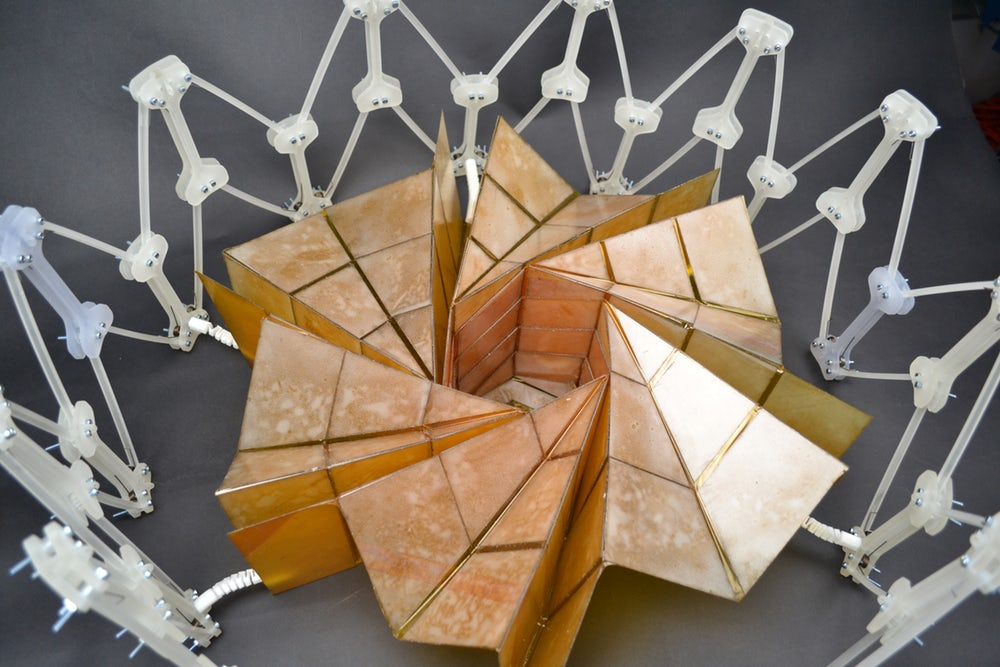

Origami is the art of folding paper into sculptures. The word comes from the Japanese words ori meaning "folding" and kami meaning "paper". Origami is generally associated with the Japanese culture, though many societies had traditions of folding paper into complex designs.
Although it is intended mostly as a form of entertainment, origami has also influenced various engineering projects, including stents, foldable structures, and even foldable solar panels (shown above) for use in spacecraft.